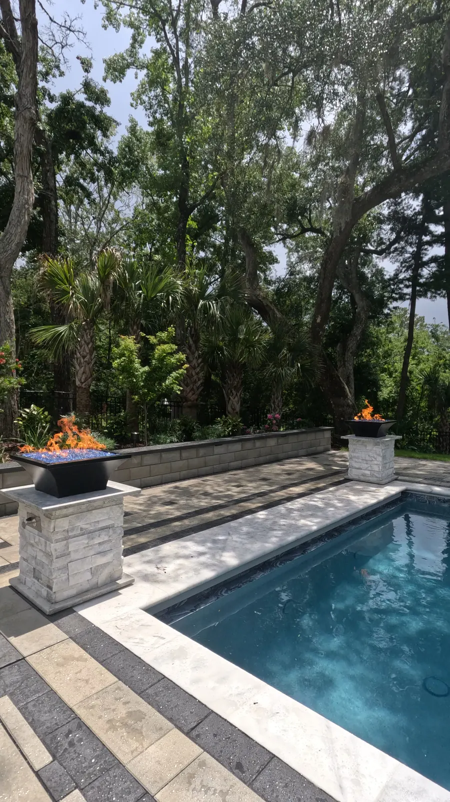
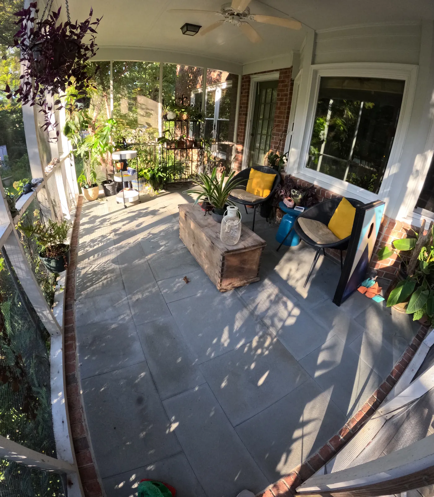

Mulch Installation and Bed Maintenance in Charleston, SC

Mulching and Bed Maintenance In Charleston,SC
A crisp, clean planting bed is one of the fastest ways to improve curb appeal and boost plant health. At Cramers Landscaping, we offer professional mulching and bed maintenance services that bring order, color, and structure to your outdoor spaces. Whether you’re prepping your yard for spring, maintaining commercial grounds, or preparing a home for sale, our crew delivers clean edges, healthy beds, and long-lasting results.

Why Mulching Matters
Mulch does far more than make your landscape look polished. It's a vital component of plant health and water conservation:
- Moisture Retention: Mulch helps your plants survive Charleston’s hot summers by reducing evaporation.
- Weed Suppression: A properly applied mulch layer blocks sunlight, minimizing weed germination.
- Temperature Regulation: Insulates root zones against extreme heat and cold.
- Soil Enrichment: Organic mulch breaks down over time, improving soil structure and fertility.
- Erosion Control: Helps stabilize slopes and protect roots from runoff and splash erosion.
A well-mulched bed is both functional and beautiful—essential for any low-maintenance landscape.
Types of Mulch We Install
We offer several mulch options based on your landscape style, maintenance goals, and budget:We’ll help you select the right mulch based on your design preferences and the needs of your plants.
Pine Bark

A traditional, cost-effective option with a rich brown tone
Shredded Hardwood

A heavier mulch with a clean, uniform appearance.
Pine Straw

Great for acid-loving plants and naturalistic designs.
Dyed Mulch (Brown, Black, Red)

Adds vibrant color and longer-lasting contrast.
Compost Mulch

A nutrient-rich option that improves soil structure over time.

Mulching Services Include
- Full bed clearing and debris removal
- Weed suppression treatment (optional)
- Fresh edge cutting for crisp definition
- Mulch delivery and spreading
- Clean-up and haul-away of excess material
Every mulch installation is completed with a professional finish—no clumps, mulch volcanoes, or uneven application.
Bed Maintenance Services
Mulch is just one part of a healthy bed system. We also offer:
Bed Redefining & Edging

We recut bed edges to sharpen lines and prevent grass encroachment.
Seasonal Planting

Add pops of seasonal color with annuals, bulbs, or evergreen accents.
Soil Amendments

We improve poor or compacted soils with compost, sand, or topsoil blends.
Debris Clearing & Rejuvenation

Removing dead leaves, weeds, and overgrowth to keep beds clean and healthy.
Groundcover Management

We manage ivy, liriope, or other spreaders to maintain balance and spacing.

Ideal for Residential and Commercial Properties
We provide mulching and bed maintenance for:
- Single-family homes
- Apartment communities
- Office parks
- Retail plazas
- Hospitality and resort properties
- Vacation rental homes in Folly Beach, Sullivans Island, and Isle of Palms
Whether you need a one-time refresh or quarterly service, we tailor our plan to fit your property and goals.

Charleston Specific Considerations
Our team understands the challenges of mulching in a hot, humid climate like Charleston:- We avoid over-mulching, which traps moisture and promotes mold.
- We maintain safe mulch distances from tree trunks and plant stems.
- We time installations around seasonal storms to avoid washout.
- We use locally-sourced mulch that blends with the Lowcountry aesthetic.

Combine with These Services
Many clients pair mulching with:
- Tree & Shrub Trimming
- Landscape Maintenance
- Landscape Design & Enhancements
- Irrigation Installation to ensure efficient water use
Our team coordinates services for minimal disruption and maximum results.
Where We Offer Bed Maintenance and Mulching
We provide professional mulching and bed maintenance throughout:No matter where you’re located in the Lowcountry, we bring prompt, reliable service and a commitment to quality.
Frequently Asked Questions
How often should mulch be replaced?
Most mulch should be replenished once a year, although dyed mulches may retain color for 14–18 months. Pine straw is often refreshed every 6–9 months.
What depth should mulch be applied?
We apply mulch at 2–3 inches deep to retain moisture and suppress weeds without suffocating root systems.
Can I request no chemicals or weed treatments?
Absolutely. We can provide chemical-free maintenance upon request.
Request Free Landscape Consultation
Book Your Mulch and Bed Service TodayMulching and bed maintenance is one of the easiest ways to elevate your landscape’s appearance and health. Let Cramers Landscaping keep your beds tidy, nourished, and beautiful all year long. Contact us to schedule a mulch estimate or discuss your next seasonal refresh.